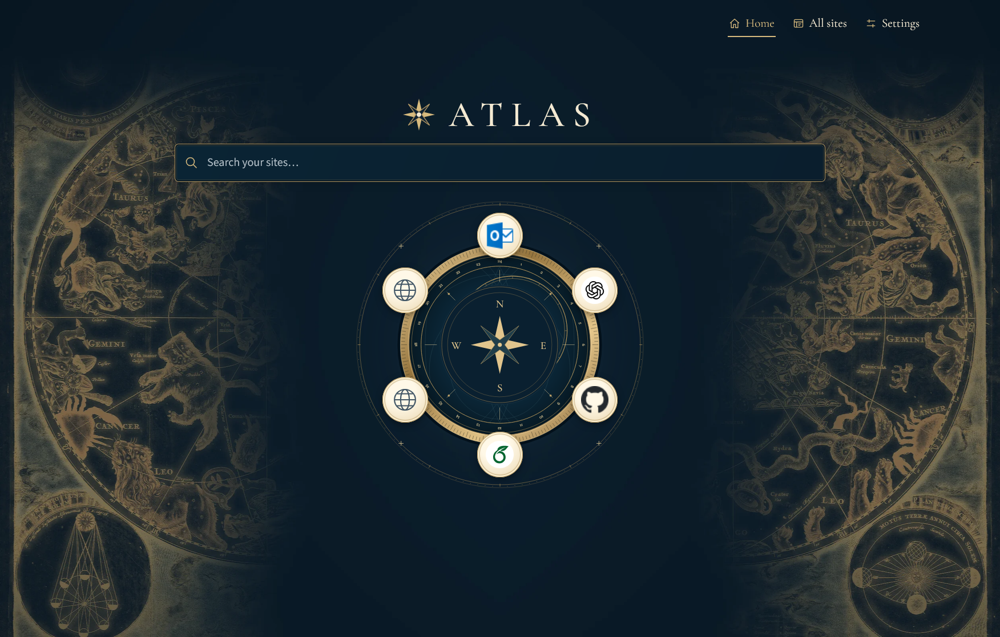
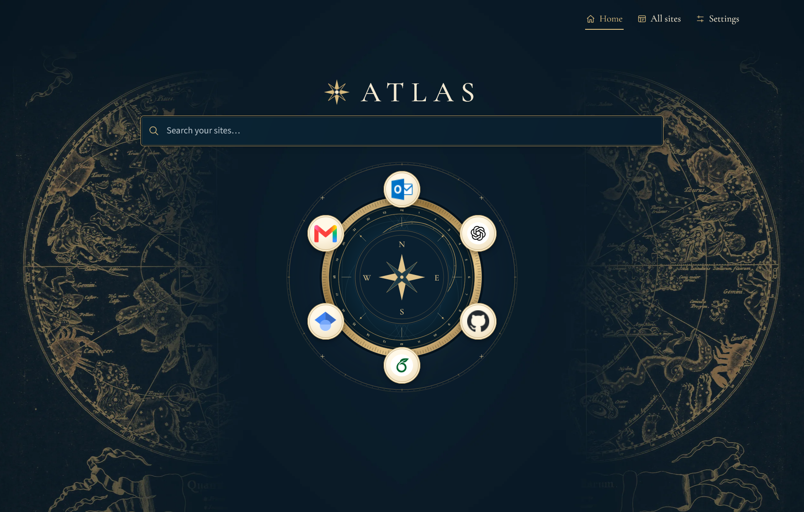
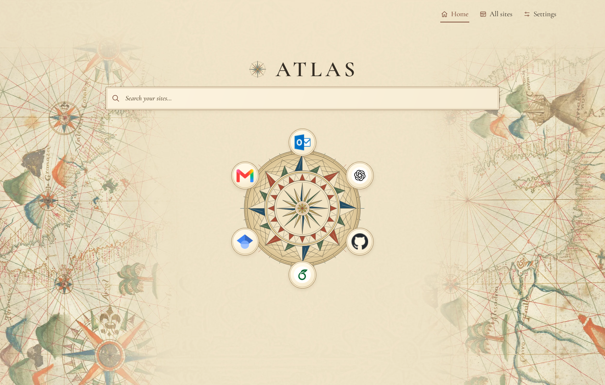
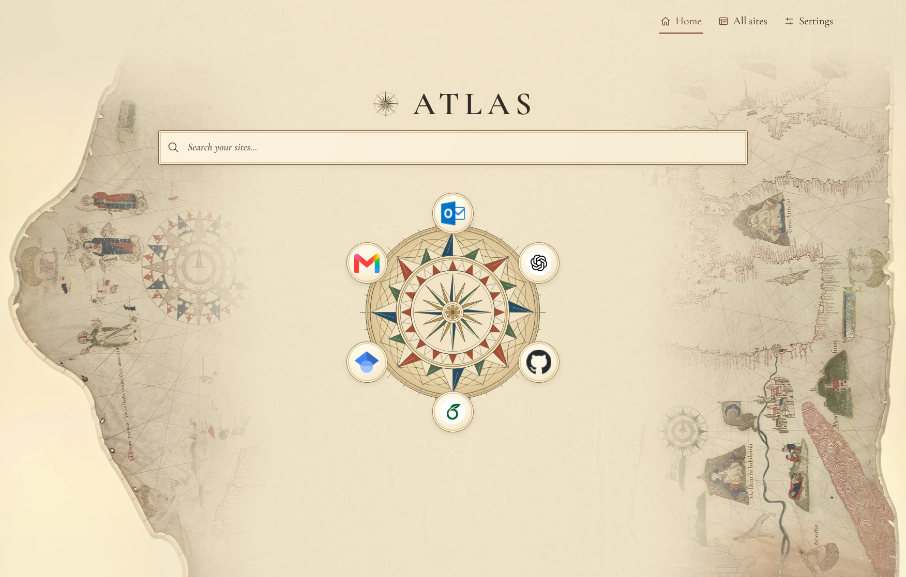

Atlas · artwork study · 11 November 2026
Historical charts, composed for a working instrument.
Four processed historical reproductions, compared in the actual Atlas interface. Two selected backgrounds are integrated into the development build. Both approved compasses, all pin positions and the interface remain unchanged. Click any screenshot to inspect it at full size.
The selected pair
Celestial · De Wit, 1680
Midnight-blue paper replacement, varied brass engraving and a clear central field. The original figures and hatching carry the history; the functional compass carries the contrast.
Parchment · Oliva family, 1621–1665
 Winds, coastlines and manuscript pigments remain visible. A reconstructed paper center clears competing diagrams. Historical rhumb lines replace the former separate geometric overlay.
Winds, coastlines and manuscript pigments remain visible. A reconstructed paper center clears competing diagrams. Historical rhumb lines replace the former separate geometric overlay.
Stage A · compare four complete compositions
These are native Firefox screenshots at the same 1752 × 1117 content viewport, using the real Atlas UI. Website favicons load asynchronously; early screenshots may show the existing globe fallback.
A · De Wit — selected

Richer shaded engraving, subdued historical diagrams and an architectural frame. Better variation than the flatter lines of B.
B · Vlasbloem / Van Keulen, 1675

Beautiful crisp constellations, but the larger hemisphere outlines compete more strongly with the functional instrument. The taller original also loses its lower ornament in a wide crop.
A · Oliva — selected

The more coherent nautical sheet. Warm paper and the red, green and blue manuscript pigments relate directly to Atlas's existing rose.
B · Mateus Prunes, 1559

Fine figures, castles and lettering, but the distinctive photographed vellum silhouette and secondary rose distract from the interface. Whole scan rotated north-up; individual figures were not rearranged.